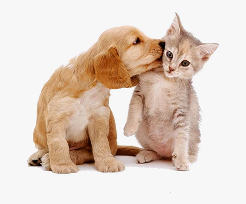
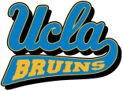
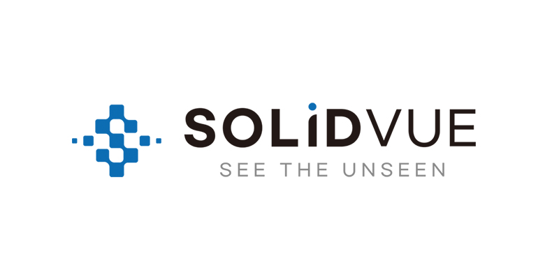
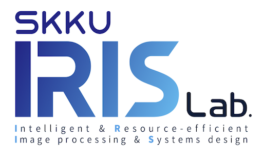
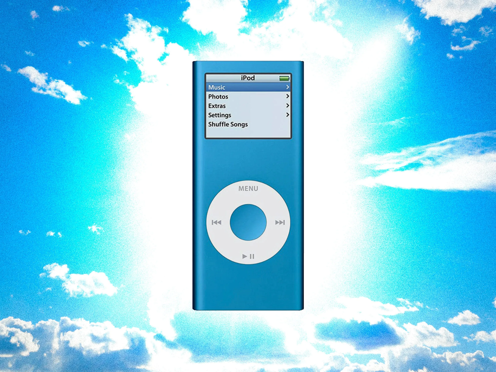
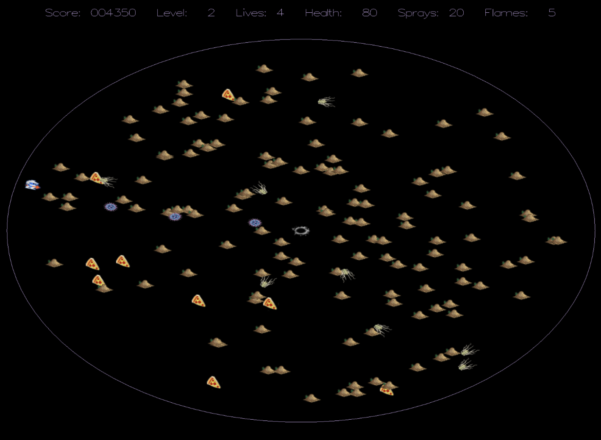
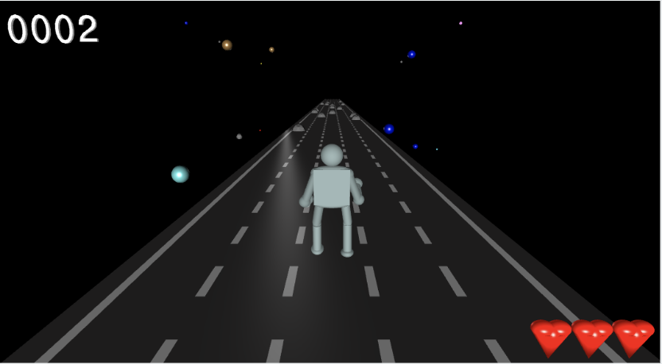
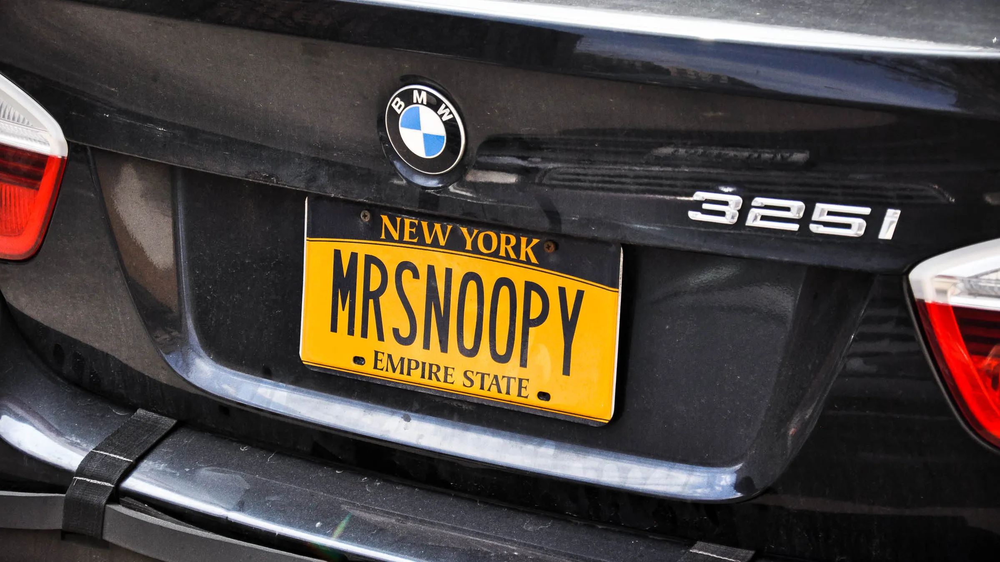
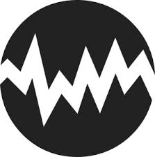

Dog/Cat Classifier
A TensorFlow model that classifies cats vs. dogs and their breeds on the Oxford Pet Dataset, reaching 95%+ accuracy. Built during my research internship at the IRIS Lab, SKKU.
I'm a
Hi there! I'm Caleb, a recent Computer Science graduate from UCLA with a strong passion for AI and game development. Beyond AI, I'm fascinated by many aspects of Computer Science, such as front-end and back-end development. Currently, I'm actively seeking a full-time Software Engineering role to contribute to inclusive and innovative technologies.
Fun fact: I've lived in three different countries: South Korea, Canada, and the United States! I've also traveled to 15 different countries. I'd love to hear about your travel experiences and share mine as well.


May 2026 – Aug 2026 · Los Angeles, CA
Owned end-to-end the design and development of a card-swiping artist discovery experience. Architected and built a locally wired prototype powering a personalized recommendation engine that surfaces artists from a pool of 10,000+ candidates by blending trending artists with collaborative-filtering-style similarity to those a user already follows. Engineered a dynamically resizing card stack (20–30 recommendations) with latency-masking animations that kept card population under 150 ms and animation processing around 5 ms, delivering a low-latency, high-performance UX. Designed a session summary screen for reviewing and correcting follow/unfollow decisions.
May 2025 – Aug 2025 · Los Angeles, CA
Shipped a cross-platform, personalized splash-screen feature to drive user engagement. Built the interface in React Native with Amazon's internal design system, and implemented Android eligibility logic based on subscription status and playback history, by modifying GraphQL queries and optimizing caching and background data-fetching to minimize latency. Drove a gradual rollout to millions of users across iOS and Android using feature gates and A/B testing, with rigorous coverage of edge cases and race conditions for a scalable, reliable release.

Aug 2024 – Nov 2024 · Seongnam, South Korea
Built computer vision systems on LiDAR sensor data to analyze distances around vehicles and generate 3D point-cloud representations for autonomous driving. Migrated a SPAD model from MATLAB to Python at 98% accuracy and expanded the point-cloud dataset 3x via snow and fog data-augmentation simulations (LISA, Monte Carlo). Implemented noise-reduction algorithms (DROR, LIOR, LIDSOR) and integrated benchmark datasets (KITTI, CADC, STF) into a unified data pipeline.

Jun 2021 – Sep 2021 · Suwon, South Korea
Researched deep learning and machine learning algorithms for AI. Built and trained an image classification and semantic segmentation neural network in TensorFlow (Python, Google Colab) that achieved 95%+ accuracy on the Oxford Pet Dataset, distinguishing cats from dogs and further classifying by breed via fine-tuning. Co-authored and edited peer-reviewed research papers for publication.

A TensorFlow model that classifies cats vs. dogs and their breeds on the Oxford Pet Dataset, reaching 95%+ accuracy. Built during my research internship at the IRIS Lab, SKKU.

An Arduino-based music player with a click-wheel interface. Won 2nd place in the IEEE Open Project Space competition.

A C++ arena survival game where the player outlasts vampires. Built with object-oriented design across multiple interacting classes.

A Temple Run-inspired 3D endless runner set in outer space, built from scratch in JavaScript and WebGL. Led development in 2 weeks with dynamic track generation, physics, and animation.

A computer-vision system that detects and reads vehicle license plates from images.
Golden time is the key. A camera-based system that detects emergency-worthy movements, like falling down the stairs, and alerts 911 instantly.
A marketplace app that fixes Facebook Marketplace's biggest annoyance, posts getting buried and lost. Adds categories and a Google Maps view of each seller's location.

A guessing game where players identify the pitch playing from a device. Tilt to change the pitch, with animations and sounds reacting to right and wrong answers.
Interested in working together or just want to say hi? I'd love to connect.